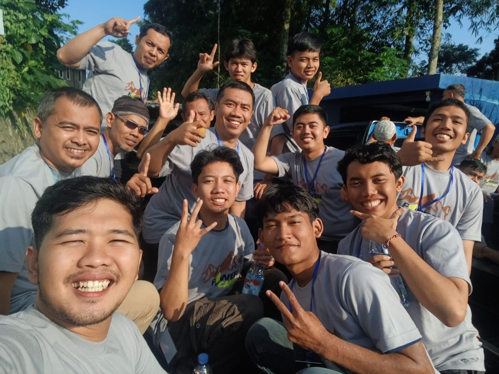
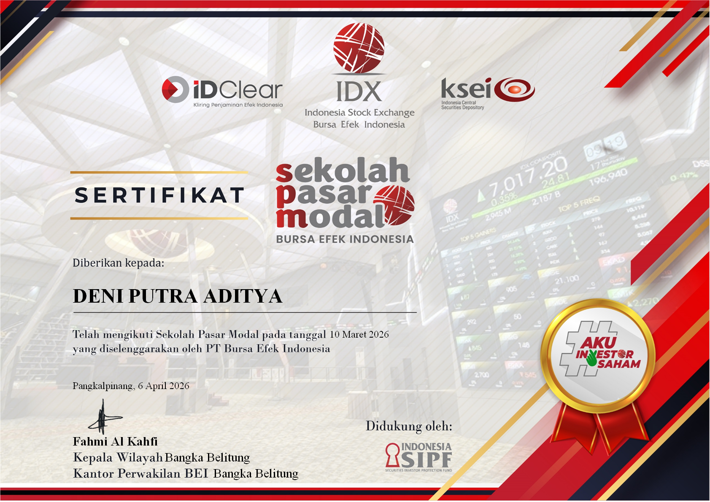

Microsoft Excel
Microsoft Excel
15 Jan 2024 5 min
10 Rumus Excel yang Wajib Dikuasai
Pelajari rumus-rumus Excel paling penting yang akan meningkatkan produktivitas kerja Anda secara signifikan.
Excel Enthusiast | Data Processing | Administrative Support
"Saya memiliki kemampuan dalam pengolahan data menggunakan Microsoft Excel, administrasi dasar, serta pemahaman dasar dalam pemrograman. Saya senang belajar teknologi baru dan selalu berusaha meningkatkan keterampilan untuk memberikan hasil kerja yang efektif dan efisien."

Saya adalah individu yang disiplin, teliti, dan bertanggung jawab. Memiliki pengalaman bekerja di bidang pelayanan pelanggan dan operasional usaha kuliner. Terbiasa bekerja dalam tim maupun secara mandiri serta mampu beradaptasi dengan lingkungan kerja yang dinamis.
Selain itu saya memiliki ketertarikan pada bidang teknologi, khususnya pengolahan data menggunakan Microsoft Excel dan dasar-dasar pemrograman.
Kemampuan yang terus saya kembangkan untuk memberikan hasil kerja yang optimal.
Pengalaman berikutnya akan ditambahkan di sini

Pelatihan Microsoft Excel tingkat lanjut meliputi formula, pivot table, dan macros.

Pelatihan dasar komputer meliputi OS, office suite, dan pengelolaan file digital.

Pengenalan dasar pemrograman meliputi logika, algoritma, dan syntax dasar.
"Deni adalah pribadi yang rajin, disiplin, dan selalu bertanggung jawab terhadap pekerjaannya. Ia selalu tepat waktu dan dapat diandalkan dalam situasi apapun."
Outlet Fried Chicken
"Pelayanannya ramah dan cepat. Selalu memberikan pengalaman yang baik saat berbelanja. Saya sangat puas dengan layanannya."
Pelanggan Setia
"Deni memiliki semangat belajar yang tinggi. Ia cepat menangkap materi dan selalu berusaha menerapkan apa yang dipelajari dalam pekerjaan sehari-hari."
Program Pelatihan Komputer
Microsoft Excel
Pelajari rumus-rumus Excel paling penting yang akan meningkatkan produktivitas kerja Anda secara signifikan.
 Produktivitas
Produktivitas
Cara efektif mengelola waktu dan meningkatkan produktivitas di awal karir profesional Anda.
 Coding
Coding
Panduan langkah demi langkah bagi pemula yang ingin memulai perjalanan belajar pemrograman.